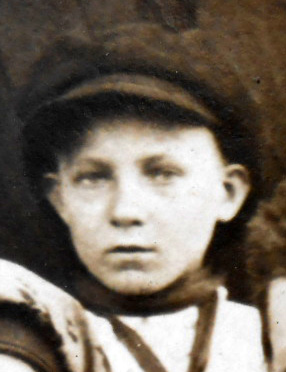

Шипов Александр Иванович (05.01.1925 - 24.02.1989)
 .
. Продолжительность жизни: 64
с 01.03.1940 - рабочий в Краснополянском совхозе
с 01.05.1942 - тракторист на ферме №3
04.02.1943 - призван в армию
с 01.08.1950 - работал шофером
с 30.08.1975 - ушел на пенсию
Звание: Сержант
Награжден орденом "Отечественной войны II степени"
Награжден медалями:
1. "За победу над Японией"
2. "30 лет Советской Армии и Флота"
3. "60 лет вооруженных сил СССР"
4. "70 лет вооруженных сил СССР"
5. "20 лет победы в Великой отечественной войне 1941 - 1945гг"
6. "30 лет победы в Великой отечественной войне 1941 - 1945гг"
7. "40 лет победы в Великой отечественной войне 1941 - 1945гг"
Отец: Шипов (Шипай\Шипау?) Иван Романович (04.09.1888 - 11.05.1968)
Мать: Шипова (Решетникова) Ксения(Аксиния) Васильевна (10.05.1890 - 26.07.1961)
Брат: Шипов Иван Иванович (1915 - ?)
Брат: Шипов Павел Иванович (1920 - ?)
Сестра: (Шипова) Анна Ивановна
Сестра: (Шипова) Мария Ивановна (? - 1930)
Жена: Шипова (Юдина) Капиталина Павловна (30.10.1930)
Сын: Шипов Александр Александрович (05.01.1952)
Дочь: Верхорубова (Шипова) Татьяна Александровна (01.02.1953)
Дочь: Герилович (Шипова) Анна Александровна (11.01.1960)
Родился: 05.01.1925, д.Лещенка. Отец: Шипов (Шипай\Шипау?) Иван Романович. Мать: Шипова (Решетникова) Ксения(Аксиния) Васильевна.
Женился: 09.07.1951, п. Сереж. Жена: Шипова (Юдина) Капиталина Павловна.
Родился сын: Шипов Александр Александрович, 05.01.1952. Мать: Шипова (Юдина) Капиталина Павловна.
Родилась дочь: Верхорубова (Шипова) Татьяна Александровна, 01.02.1953. Мать: Шипова (Юдина) Капиталина Павловна.
Родилась дочь: Герилович (Шипова) Анна Александровна, 11.01.1960, с. Краснополянск. Мать: Шипова (Юдина) Капиталина Павловна.
Умер: 24.02.1989. Причина смерти: Инсульт.
. |